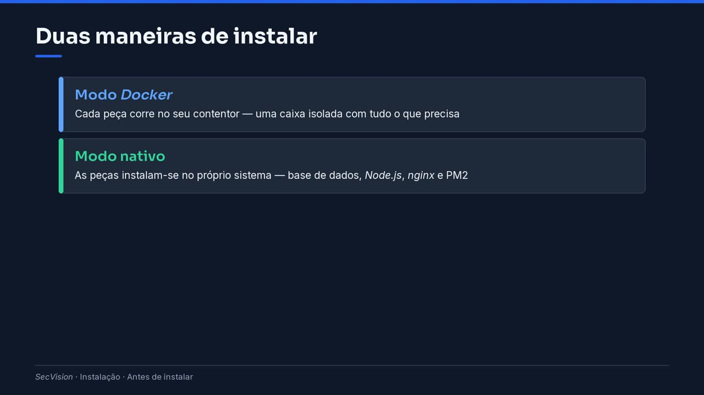

Antes de instalar
O ponto de partida do manual: o que é o SecVision, o mínimo de terminal para acompanhar o manual, os dois modos de instalação e como escolher, o que preparar e o que o instalador vai perguntar.
Olá. Neste manual vamos instalar o SecVision de raiz, passo a passo. Não é preciso ter experiência com Linux nem com cibersegurança: vou explicar o que fazemos, porque o fazemos e o que deve aparecer no ecrã em cada etapa.
Esta primeira parte prepara o terreno. Os dois seguintes tratam do servidor: obter o Ubuntu Server e instalá-lo. Depois, as duas maneiras de instalar o SecVision, o primeiro acesso à plataforma e o ambiente de testes.
O que vamos instalar
O SecVision é uma plataforma web. Junta, num só sítio, o inventário dos sistemas da organização e mostra quais estão a ser vigiados pelas ferramentas de segurança e quais estão a descoberto.
Também apoia a gestão da segurança da informação — as normas a cumprir, os riscos, os controlos e as auditorias. Instala-se uma única vez, num servidor. Depois, cada pessoa usa-o a partir do browser, como qualquer site.
O que é o SecVision
Uma plataforma web que reúne o inventário dos sistemas — a partir do Active Directory, do DNS e do DHCP.
Mostra que sistemas estão protegidos e quais estão a descoberto, por níveis de criticidade (N1 a N4).
Ajuda a gerir a segurança da informação: normas, riscos, controlos, evidências e auditorias.
Instala-se uma vez num servidor; quem o usa entra pelo browser, sem instalar nada no seu computador.
O mínimo de terminal
Vamos usar o terminal: uma janela onde damos ordens ao computador por escrito. Escrevemos um comando e carregamos em Enter. A linha que termina num cifrão diz quem somos, em que máquina estamos, e que o terminal está pronto para o próximo comando.
Algumas tarefas precisam de permissões de administrador. Para isso existe o sudo: o sistema pede a palavra-passe do nosso próprio utilizador. Um pormenor que costuma assustar: enquanto se escreve a palavra-passe, não aparece nada no ecrã. É de propósito. Escreve-se, e carrega-se em Enter.
O terminal, em poucas palavras
O terminal é uma janela onde se dão ordens ao computador por escrito: um comando, e a tecla Enter.
A linha «secv@secvision:~$» diz quem somos (secv), em que máquina (secvision) e que o terminal espera um comando.
«sudo» à frente de um comando pede permissão de administrador. O sistema pede a palavra-passe do nosso próprio utilizador.
Ao escrever uma palavra-passe no terminal não aparece nada — nem asteriscos. É normal: escreve-se e carrega-se em Enter.
Os dois modos
O instalador oferece duas maneiras de instalar, e é a primeira pergunta que faz. No modo Docker, cada peça do SecVision corre no seu contentor: uma espécie de caixa isolada, que traz dentro tudo o que essa peça precisa. É o modo que o instalador propõe por omissão.
No modo nativo, as peças instalam-se diretamente no sistema: a base de dados MariaDB, o Node.js que corre a aplicação, o nginx que entrega as páginas ao browser, e o PM2, que mantém a aplicação sempre a correr. O resultado, para quem usa, é o mesmo.
Duas maneiras de instalar
- Modo Docker
Cada peça corre no seu contentor — uma caixa isolada com tudo o que precisa
- Modo nativo
As peças instalam-se no próprio sistema — base de dados, Node.js, nginx e PM2

Duas maneiras de instalar.
Como escolher? O Docker é a escolha por omissão e mantém tudo arrumado. O modo nativo é indicado num PC com Windows, através do WSL, quando não há o Docker Desktop, ou para quem prefere ver cada peça instalada no sistema.
Seja qual for o modo, o instalador instala também o Docker. Há uma peça que corre sempre num contentor: o Presidio. É ele que encontra e esconde os dados pessoais antes de algum texto seguir para uma inteligência artificial. Sem ele, essas funções ficam desligadas — por segurança.
Como escolher o modo
Docker: a escolha por omissão. Tudo fica arrumado em contentores; atualiza-se com um comando do Docker.
Nativo: indicado para um PC com Windows (WSL2) sem Docker Desktop, ou para quem prefere as peças à vista.
Nos dois casos o instalador põe o Docker: há uma peça que corre sempre num contentor — o Presidio.
O Presidio protege os dados pessoais antes de qualquer texto seguir para uma inteligência artificial.
Dica
Se tiver dúvidas, siga o modo que a sua equipa de sistemas já usa noutros servidores.
Preparar a máquina
O que é preciso? Um servidor dedicado, físico ou máquina virtual, com o Ubuntu Server 24.04. O SecVision é usado por várias pessoas ao mesmo tempo, pela rede: precisa de uma máquina sempre ligada e com um endereço fixo. Para experimentar num PC com Windows, também se instala através do WSL — e algumas destas gravações foram feitas assim, numa máquina de laboratório — mas isso é para testes, não para produção.
Precisamos de um utilizador com permissão de sudo; não é preciso trabalhar como root, o administrador total do sistema, e é melhor não o fazer. A máquina tem de ter acesso à internet durante a instalação. E, para começar, quatro processadores, oito gigabytes de memória e uns quarenta livres em disco chegam.
O que é preciso
Um servidor dedicado — físico ou máquina virtual — com Ubuntu Server 24.04 LTS, sempre ligado e com endereço fixo.
Para testes ou demonstrações, também serve um PC com Windows, através do WSL2 — mas não para produção.
Um utilizador com permissão de sudo. Não é preciso, nem aconselhável, trabalhar como root.
Acesso à internet durante a instalação: o instalador descarrega programas, bibliotecas e contentores.
Para começar: 4 processadores, 8 GB de memória e uns 40 GB livres em disco.
Dica
Valores da máquina de laboratório destas páginas; em produção, conte com mais disco para as evidências e as cópias.
As perguntas do instalador
Convém chegar à instalação com as respostas preparadas. O instalador pede duas palavras-passe para a base de dados — a do administrador e a da aplicação, com pelo menos doze caracteres. Guarde-as já num cofre de palavras-passe.
Pede também o endereço pelo qual as pessoas vão chegar à plataforma. Isto importa para as chaves de segurança físicas, como a YubiKey, que só funcionam no endereço certo. E a porta: a 80, ou a 8080 se estiver ocupada. No fim, mostra a conta inicial: admin.
O que o instalador vai perguntar
Duas palavras-passe para a base de dados: a do administrador (root) e a da aplicação, com 12 caracteres ou mais.
O endereço pelo qual as pessoas vão chegar à plataforma — por exemplo, o nome do servidor na rede.
A porta: o instalador propõe a 80, ou a 8080 se a 80 estiver ocupada.
No fim, mostra o endereço e a conta inicial: admin, com a palavra-passe ChangeMe123!.
Dica
Guarde as palavras-passe num cofre de palavras-passe antes de começar. Nenhuma aparece no ecrã enquanto a escreve.
Antes do primeiro acesso
Um aviso para não ser apanhado de surpresa: no primeiro acesso, a plataforma obriga a trocar a palavra-passe inicial e a ativar o segundo fator de autenticação. Tenha à mão um telemóvel com uma aplicação autenticadora, ou uma chave de segurança.
Não há forma de saltar este passo, e é de propósito: o SecVision guarda informação sensível sobre a segurança da organização, e uma palavra-passe sozinha não chega para a proteger.
Importante
O primeiro acesso obriga a trocar a palavra-passe inicial e a ativar o segundo fator de autenticação.
Tenha à mão um telemóvel com uma aplicação autenticadora — Google ou Microsoft Authenticator, por exemplo — ou uma chave FIDO2.
Sem o segundo fator não se entra na plataforma. É assim de propósito: protege o acesso a informação sensível.